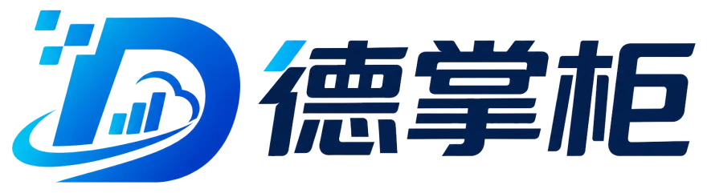

Know what is available.
Purchasing, goods receipts, product records and warehouse visibility support everyday fulfilment.

Dezhanggui ERPOne workspace for the everyday business of selling, delivering and caring for home appliances.
Run a sample saleFollow the work across teams without losing the product, the customer or the next step.
Purchasing, goods receipts, product records and warehouse visibility support everyday fulfilment.
Sales documents, outbound fulfilment and customer balances connect the sale to its settlement.
Device records, warranty information, installation and repair requests support the after-sales journey.
Dezhanggui (德掌柜) is a business management platform developed for DEAOE's home-appliance sales and after-sales operations.
It brings purchasing, sales, stock, customer balances and service records into one practical ERP workspace.
ERP describes the connected business functions. SaaS describes a delivery model. This showcase presents the platform's ERP capabilities without claiming a public subscription service.
Create a sample sale, observe its stock and receivable changes, record payment, then open a service request. The demo is simplified and uses fictional records throughout.